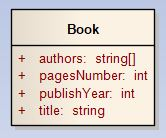

Objektų serializacija (informacijos paruošimas, tam tikru formatu, ją saugoti ar perduoti) svarbi tema, nes objektų serializavimas leidžia iš vienos sistemos perduoti informaciją į kitą sistemą, integruoti programas į vieną bendrą programų sistemą. Šiame skyriuje aptarsime objektų serializavimą JSON formatu. Apie JSON formatą galite susipažinti oficialioje svetainėje: www.json.org.
Panagrinėkime pavyzdį, kaip galėtume objekto informaciją konvertuoti į informaciją JSON formatu. JSON - tekstinė informacija, esanti tarp „{” ir „}” skliaustelių ir saugoma raktažodis-reikšmė (angl. key-value) poromis. Serializuosime 1 pav. pavaizduotą klasę.
 1 pav. Serializuojama klasė Book.
Klasė Book:
1. classBook 2. { 3. public string title; 4. public string author; 5. public int publishYear; 6. public int pagesNumber; 7. 8. public string ToJSON() 9. { 10.string jsonString = $"{{ " + 11.$"\"title\":\"{title}\", " + 12.$"\"author\":\"{author}\", " + 13.$"\"publishYear\":{publishYear}, " + 14.$"\"pagesNumber\":{pagesNumber}" + 15.$" }}"; 16.return jsonString; 17.} 18.}
Metodas Main():
1. Book book = newBook() 2. { 3. author = "Matthew D. Groves", 4. title = "AOP in .NET", 5. pagesNumber = 274, 6. publishYear = 2013 7. }; 8. 9. Console.WriteLine(book.ToJSON());
Klasė Book:
1. classBook { 2. public String title; 3. public String author; 4. public int publishYear; 5. public int pagesNumber; 6. 7. public String toJSON() { 8. String jsonString = "{ " + 9. "\"title\":\"" + title + "\", " + 10."\"author\":\"" + author + "\", " + 11."\"publishYear\":" + publishYear + ", " + 12."\"pagesNumber\":" + pagesNumber + "" + 13." }"; 14.return jsonString; 15.} 16.}
Metodas Main():
1. Book book = newBook(); 2. book.author = "Matthew D. Groves"; 3. book.title = "AOP in .NET"; 4. book.pagesNumber = 274; 5. book.publishYear = 2013; 6. 7. System.out.println(book.ToJSON());
1. book = Book("Matthew D. Groves", "AOP in .NET", 2013, 274) 2. print(book.to_json())
Pirmajame pavyzdyje, patys pasirašėme savo, informacijos konvertavimo į JSON formatą, metodą, tačiau šis būdas sukelia daug problemų: galima neteisingai suformuoti JSON formatą (visada galima pasitikrinti jsonlint.com svetainėje), didelius objektus serializuoti labai sudėtinga dėl sąryšių su kitais objektais. Deserializuoti informaciją yra dar sudėtingesnis veiksmas, dėl to, laimei, jau yra sukurtų ir paruoštų naudoti įrankių serializavimo ir deserializavimo problemoms spręsti. Apžvelkime šiuos serializavimo įrankius.
Klasė Book:
1. [DataContract] 2. classBook 3. { 4. [DataMember] 5. public string title; 6. [DataMember] 7. public string author; 8. [DataMember] 9. public int publishYear; 10.[DataMember] 11.public int pagesNumber; 12.}
Metodas Main():
1. Book book = newBook() 2. { 3. author = "Matthew D. Groves", 4. title = "AOP in .NET", 5. pagesNumber = 274, 6. publishYear = 2013 7. }; 8. 9. // Serializavimas 10.MemoryStream ms = newMemoryStream(); 11.DataContractJsonSerializer serializer = newDataContractJsonSerializer(typeof(Book)); 12.serializer.WriteObject(ms, book); 13.ms.Position = 0; 14.StreamReader sr = newStreamReader(ms); 15.Console.WriteLine(sr.ReadToEnd()); // Išvedama JSON formatu 16. 17.// Deserializavimas 18.ms.Position = 0; 19.Book deserializedBook = (Book)serializer.ReadObject(ms); // Iš JSON konvertuota į Book objektą
Darbui su JSON objektais, Java kalboje, rekomenduojama naudoti GSON biblioteką, kurią galima parsisiųsti iš https://repo1.maven.org svetainės. Toliau pateiktas pavyzdys remiasi šia biblioteka.
Klasė Book:
1. classBook { 2. public String title; 3. public String author; 4. public int publishYear; 5. public int pagesNumber; 6. }
Metodas Main():
1. Book book = newBook(); 2. book.author = "Matthew D. Groves"; 3. book.title = "AOP in .NET"; 4. book.pagesNumber = 274; 5. book.publishYear = 2013; 6. 7. GsonBuilder builder = newGsonBuilder(); 8. builder.setPrettyPrinting(); 9. Gson gson = builder.create(); 10. 11.// Serializavimas 12. String jsonString = gson.toJson(book); 13.System.out.println(book); // Išvedama objekto informacija JSON formatu 14. 15.// Deserializavimas 16.Book deserializedBook = gson.fromJson(jsonString, Student.class); // Iš JSON konvertuota į Book objektą